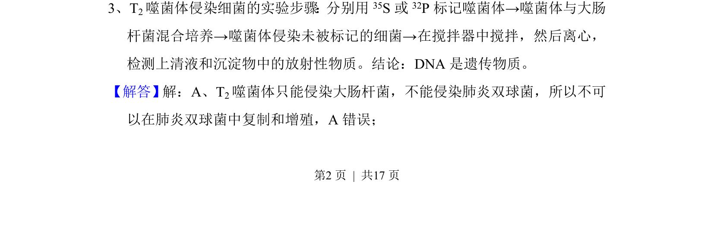
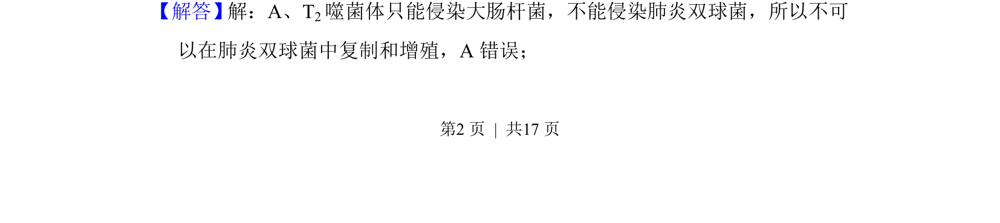
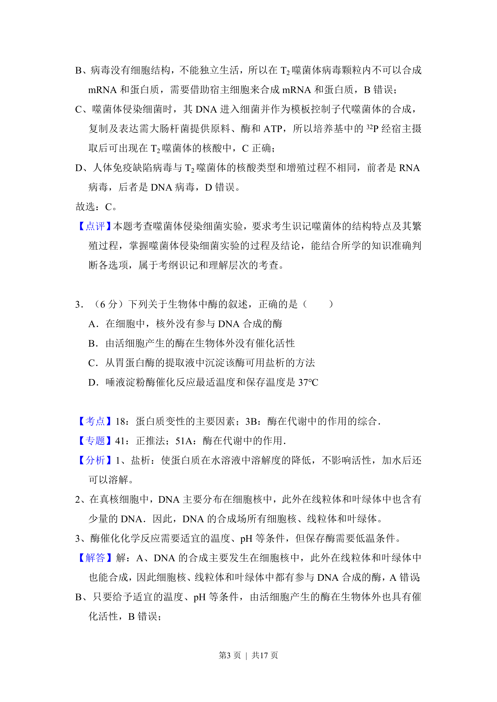
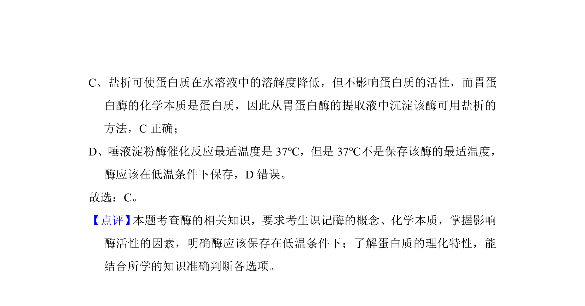

考点：噬菌体侵染实验 宿主特异性 DNA是遗传物质

该题考查T2噬菌体侵染实验的宿主专一性，指出其只能侵染大肠杆菌。



📄 原 PDF 第 2 页：
素材/真题/吉林/2008-2024·（吉林）生物高考真题/2017年高考生物试卷（新课标Ⅱ）（解析卷）.pdf
3、T2噬菌体侵染细菌的实验步骤：分别用35S或 32P标记噬菌体→噬菌体与大肠 杆菌混合培养→噬菌体侵染未被标记的细菌→在搅拌器中搅拌，然后离心， 检测上清液和沉淀物中的放射性物质。结论：DNA是遗传物质。
【解答】解：A、T2噬菌体只能侵染大肠杆菌，不能侵染肺炎双球菌，所以不可 以在肺炎双球菌中复制和增殖，A错误；